-
I have been concerned that my cat converter might be restricted, and wanted to take it off the car to inspect. In Texas it isn't required that cars this old pass smog, but I have no reason to delete it if it's just a wide spot in the exhaust. When I went to take it off, I found that three of the bolts are 17mm and one is 13mm. This is in addition to the fact that they were basically fused to the flanges with rust…
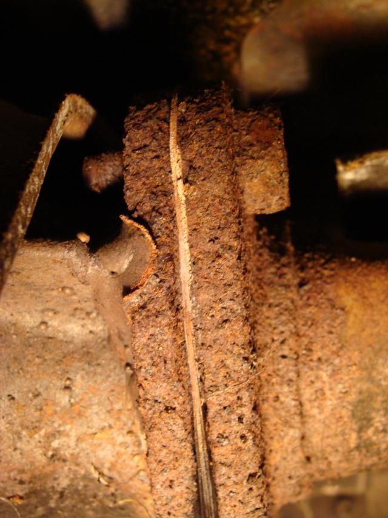
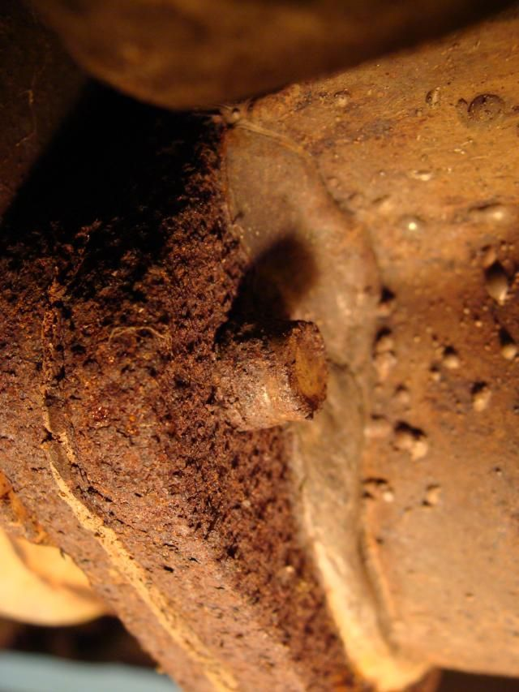
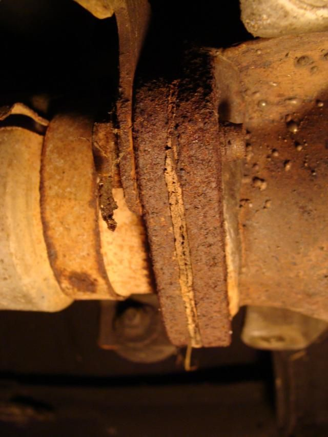
Anyway, just wanted to see if anyone could confirm that this is the correct assortment of bolts. I got the big ones off, but this last one is being very difficult. Might end up taking a cutting wheel to it, since I don't have anything more manly. Rounded over the bolt head and have not been able to get a proper grip on it with channel lock pliers that are big enough to break it loose… soaked it down with PB, will make another run at it tomorrow night. One problem is I don't have it on a lift, it's just on jack stands and I can't get much mechanical advantage on it laying on my back.
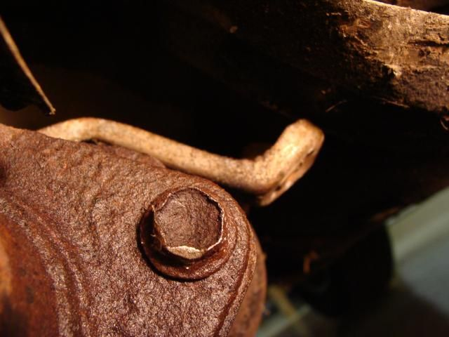
I looked on the "nuts and bolts" thread but this isn't one of the ones listed. Also looked at the linked pages but it's not there. Courtesy parts lookup doesn't even show the bolts in the schematic… was hoping I might confirm two different part numbers and 3 required for one of them. Last place I tried was the Z31.com fiche, but it still isn't working.
Just wanted to share my frustration and see if anyone else could confirm the odd bolt sizing.'86 NA - original owner (1986-93) and final owner (2005-present)
My build thread: http://z31performance.com/showthread…-Got-mine-back
-
Confirmed, that's odd. But not necessarily rare as i've found numerous
instances "improvised fasteners".
Someone drops a nut/bolt, then can't find it and goes to the toolbox or garage
to find one that's close enough. Indeed a sloppy way to do it.
You don't have to replace it with one from the stealership though. If you have
an ACE hardware (a good one), replace them with stainless bolts. They will
be much easier to remove if you ever have to do it again. Take in an old one
to match the threads. (either M10X1.5 or M12x1.5)
I'd cut the head off and then soak the left-over part of the bolt in PB-Blaster
overnight before trying a torch and vice-grips to extract the rest of the bolt.
84 AE/Shiro #683/Shiro #820/84 Turbo -
Yeah, thanks… really meant - can anyone confirm that's the way they were built originally? I really don't think anyone has touched this in 29 years… Texas didn't have smog regs until recent enough that, had it been replaced to meet them, then the hardware would look a lot better.Originally posted by Z_Karma View Post'86 NA - original owner (1986-93) and final owner (2005-present)
My build thread: http://z31performance.com/showthread…-Got-mine-back
-
I think Xeonon is working on more Fiche stuff. regardless, I'd seriously consider a down pipe and cat (or not) replacement with the look of that thing. worst case you'll be drilling out the one you'll need to cut off, and using nuts and bolts anyway…Damn dirty angels....these cars!
Current Daily Driver - 86 Turbo.
Under the cover - THE BANANA… that needs to be re-energized.
sigpic -
Finally got them off…
Spent more time than I should have trying to get that last bolt off… used a variety of methods… put heat on it, put PB on it… tried different wrenches, everything kept slipping off… yeah, this didn't work either.
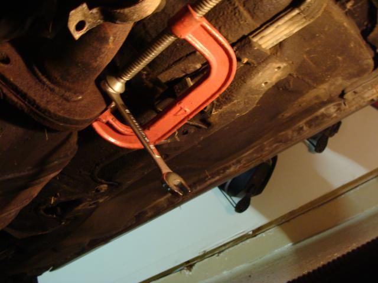
I am stubborn, and didn't really want to take a cutting wheel to the bolt head. I ended up finding a tool that did the job… these things are awesome if you need to work with a rounded bolt head.
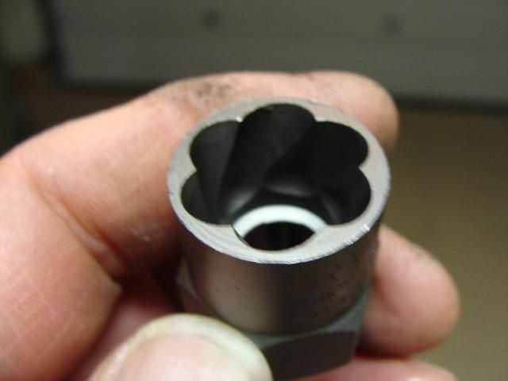
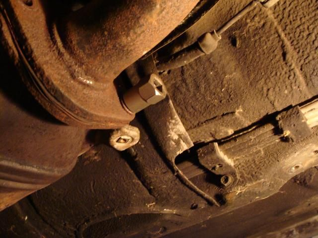
Had to hammer it to get a bite in the bolt head, but once it did, I was able to apply enough torque to back it out. Word of advice if you do buy one - the set at AZ was about 50% more expensive than at Lowe's. I'm taking it back to get a refund, just on the principle. Didn't realize that until I had already used the tool, but it's none the worse for wear…
Found that the cat was probably not abnormally restricting exhaust… This is how it looked if you shined the light from one end and lined up right down the catalyst matrix… hard to capture well with a camera.
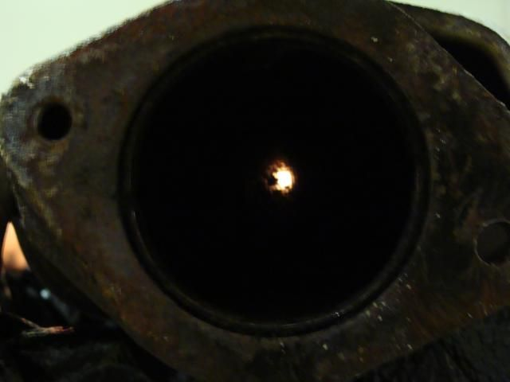
Decided to make sure that nothing would restrict this in the future…
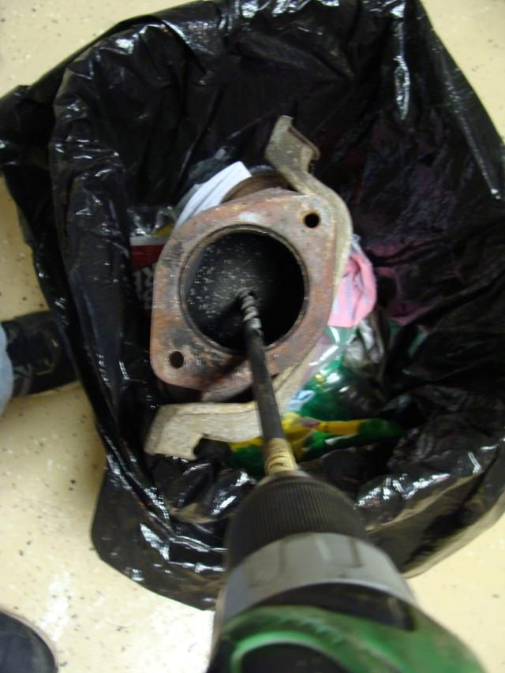
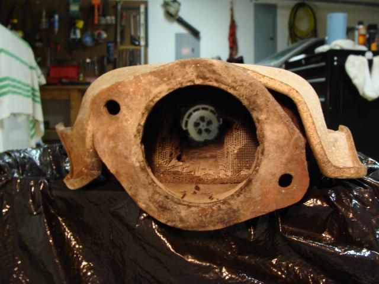
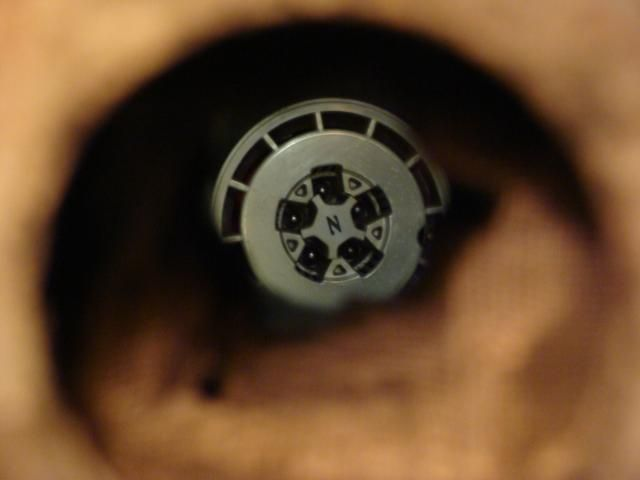
Didn't like how uneven the grid was after drilling and hammering it out with a flat bar, so I decided to get all smart and use a piece of PVC to drive out a circular cross-section…
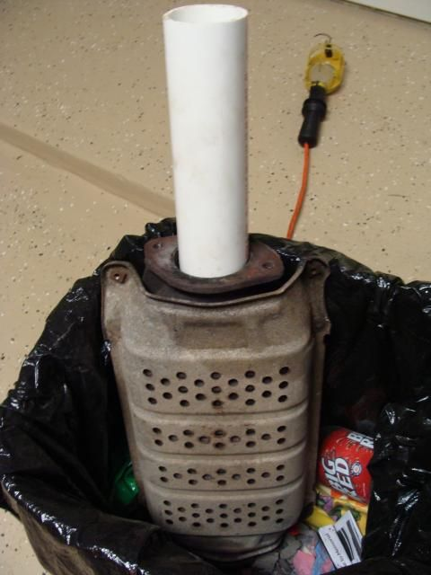
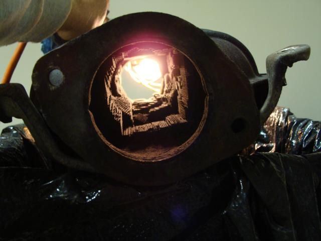
Well, obviously ^that^ isn't circular… but it isn't going to restrict flow either.
For the record, bolt size is 10-1.25 x 25. Got some replacements, but need to chase the threads with a tap before I try to reinstall it. None of the hardware stores carry that thread pitch, so I'm going to check with a specialty fastener shop tomorrow. I'm sure they will have it, just not going to want to pay their price I imagine. Only other option is to just replace the cat completely. But after all that work gutting it, don't believe I want to do that. A couple new gaskets, clean up the threads and hang it back under there until I can afford to do the whole exhaust sometime later. Muffler is about to rot out, so I may push it up on my list…
All of this is completely irrelevent to the problem I've had with the engine not running right… eventually I'm going to figure that out.'86 NA - original owner (1986-93) and final owner (2005-present)
My build thread: http://z31performance.com/showthread…-Got-mine-back
-
whats the name of that socket you used? -
Here they are…
This is the set I bought…
Irwin 5-piece Bolt-Grip Base Set
The box is designed to hold a second set of 5 sockets that are sold separately as an "expansion set"'86 NA - original owner (1986-93) and final owner (2005-present)
My build thread: http://z31performance.com/showthread…-Got-mine-back
-
Cha iro
enjoy building it yourself.
if it fails, fuck it.
at least you gave it a whirl. -
You may want to take down the pictures of you gutting that cat. It may be legal in Texas, but you can still get in Federal trouble.
From http://www.epa.gov/otaq/cert/factshts/catcvrts.pdfFirst, it is a violation of Federal law because it is likely to increase the amount of pollution coming out of the vehicle. Penalties for violations by individuals, service or repair shops or fleet operators are up to $2,500 per violation. (Each improper installation is considered a violation.) New car dealers can be penalized up to $25,000 per violation. Any person who causes a violation could be subject to the same penalty as the installer.Prius… because Pretentious wouldn't fit across the back of the car…
Cheap, Fast, Reliable - pick any two
My 1986 Turbo Build -
This is not a "How To" thread…
This was referring to the tap, not the bolts…Originally posted by wbnethery3 View Post
Yep, got those at Lowe's… about the same price.Originally posted by Augustus Maximus View Post
Yeah, thanks for your concern. I should probably not have been so eager to share, but let this disclaimer be clear:Originally posted by jaqattack02
DO NOT DO THIS… DO NOT DO THIS… DO NOT DO THIS… DO NOT DO THIS… DO NOT DO THIS…
THIS IS NOT A "HOW TO" … THIS IS NOT A "HOW TO" … THIS IS NOT A "HOW TO" … THIS IS NOT A "HOW TO" …'86 NA - original owner (1986-93) and final owner (2005-present)
My build thread: http://z31performance.com/showthread…-Got-mine-back
-
You should have taken the cat to the scrap yard and pocketed at least $50. You could have then turned around and bought the CM Performance test pipe to replace the cat.
1986 300ZX Turbo…sold
1990 Skyline GT-R…new money pit
2014 Juke Nismo RS 6-speed…daily -
Damn dirty angels....these cars!
Current Daily Driver - 86 Turbo.
Under the cover - THE BANANA… that needs to be re-energized.
sigpic -
Got this for my 2+2 1988 NA…great quality and price.Originally posted by NissanEgg
http://www.ebay.com/itm/CONVERTER-TE…63e38f&vxp=mtr
And fitment with the stock exhaust.Cha iro
enjoy building it yourself.
if it fails, fuck it.
at least you gave it a whirl. -
Never heard of that… is that an EPA-mandated scrap value, or based on the contents? I have no clue, just assumed the matrix was some sort of ceramic. My outlay is less than $20 and I'm saving the rest for some meaningful repairs…Originally posted by NissanEgg
Love the disclaimer for the "non catalytic converter" at the bottom: " … It may result in a significant gain in horsepower and may prevent your car from passing emissions."Originally posted by Axel kain View Post'86 NA - original owner (1986-93) and final owner (2005-present)
My build thread: http://z31performance.com/showthread…-Got-mine-back
-
thanks much

Copyright © 2006–. All rights reserved. Privacy Policy